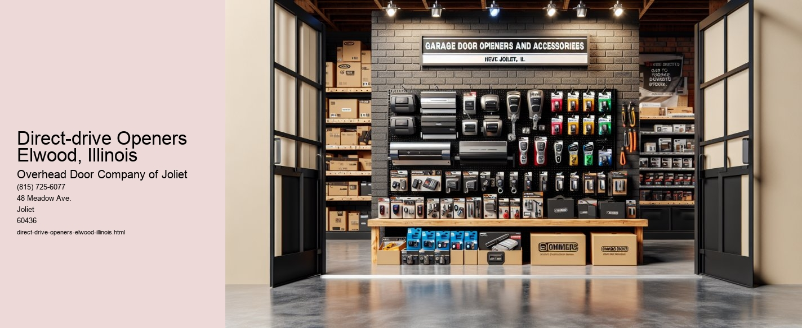

Serving Joliet, IL and surrounding Will County communities including:
Authorized Dealer for Overhead Door™ Openers and Accessories.

The Role of Direct-Drive Openers in Elwood, Illinois: A Modern Solution for Garage Door Efficiency
In the small, yet vibrant community of Elwood, Illinois, the integration of technology into everyday life has become increasingly significant.
Direct-drive openers represent a significant advancement in garage door technology. Unlike conventional systems, which rely on a complex arrangement of chains or belts, the direct-drive mechanism operates with a single motor that glides smoothly along a stationary chain. This design simplifies the operation, reducing the number of moving parts and thereby minimizing the potential for mechanical failure. For residents of Elwood, where harsh winters and unpredictable weather conditions can test the durability of home infrastructure, the reliability of direct-drive openers is a welcome advantage.
One of the most compelling features of direct-drive openers is their unparalleled quietness. In a community like Elwood, where peace and tranquility are highly valued, the silent operation of direct-drive openers provides a significant improvement over the noisy clatter of traditional openers. This is particularly beneficial for homeowners with living spaces adjacent to the garage, as it minimizes disturbances during early morning departures or late-night arrivals.
Efficiency is another hallmark of direct-drive openers. They are designed to consume less energy compared to their chain or belt-driven counterparts, aligning with the growing trend towards sustainable living. This energy efficiency not only helps reduce utility bills but also supports the broader environmental goals of Elwood by decreasing the communitys overall carbon footprint.
Moreover, direct-drive openers are known for their longevity and low maintenance requirements. The reduction in moving parts means there are fewer components subject to wear and tear. For Elwood homeowners, this translates to fewer repair costs and less frequent maintenance, offering both peace of mind and financial savings over the life of the opener. This durability is particularly advantageous in Elwood's climate, where temperature fluctuations can exacerbate the wear on mechanical systems.
Additionally, the installation of direct-drive openers can be a valuable investment for property owners, enhancing the appeal and functionality of their homes. As the real estate market in Elwood continues to develop, features like advanced garage door systems can increase property value and attract potential buyers who are seeking modern conveniences.
In conclusion, the adoption of direct-drive openers in Elwood, Illinois, represents a harmonious blend of innovation and practicality.
Screw-drive Openers Elwood, Illinois